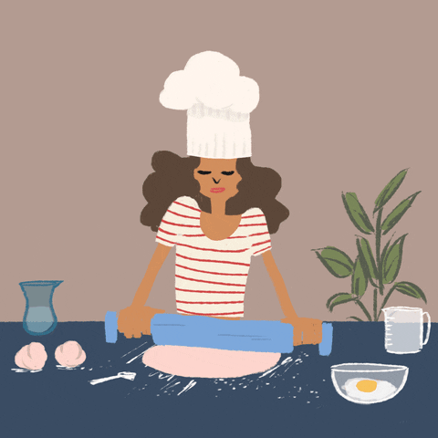

|  |
MASTER CHEF
-
In my primary school I have ambition to be a chef, because I think that
I can cook everything that I want to eat.
-
I like chef attire which show that eventhough chef work really hard
in the kitchen but their attire stay clean and white after the mess
preparing customer meal.
-
I also dreamt to be a cafe owner if I am a chef, I want to show
my talent for every customer in my cafe.
|
| |
Ms PHOTOGRAPHER
-
I like to take picture every time I went out, because every picture bring
a lot of memory. I also have DSLR camera that my mother bought for me on my 12th
birthday.
-
I have futher my study in Diploma In Multimedia at KPTM Ipoh on June-October 2018.
But I get offer to UiTM second intake to Diploma Information management and I stopped
my study at KPTM. Beside that the fee every semester at KPTM also is quit expensive
and I dont want to burden my mother, because she is a single mother and need to
take care of me and my sister.
-
Until now this still be my dream ambition, I will keep taking picture, and create memory
with my love ones.
|
 |
WEBSITE DEVELOPER
-
since I was studying in Diploma Information Management and decide to futher my study in bachelor
degree in Information Content Management under the same faculty.
-
I like to try something new, coding is a difference language and I like to learn it.
-
website developer aslo need to have a critical thinking to figure out the bug in each
website that they develop and this is suitable for me, because I am organize person, so
I like to figure out something that not perfect in my website soon.
|